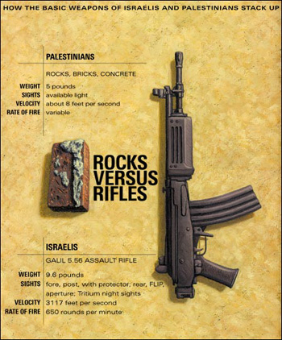

NOTE FOR THE MEDIA: Correct number of those killed during the comparable September 1996 Clashes
During the September 1996 Clashes, 88 Palestinians and 16 Israelis were killed. This figure was compiled after a three-week long investigation by Birzeit University's Web Project in 1997 during the making of the September 1996 Memorial website. A team of students, staff, and others took both of the official (and slightly differing) Palestinian Authority lists, compiled them, and went to interview families and friends of each of those killed. Reports during these recent clashes that have referred to the 1996 events have inaccurately cited Palestinian deaths as low as 60.